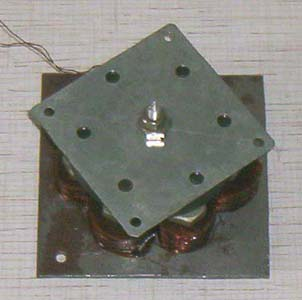
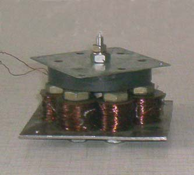
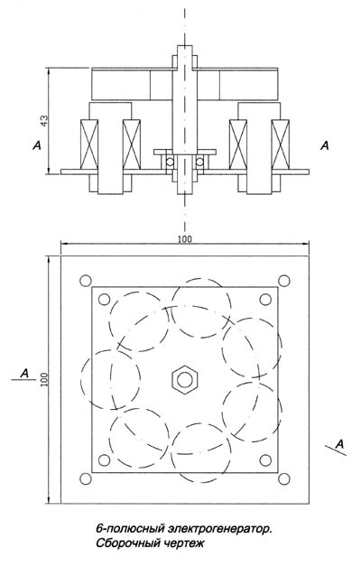
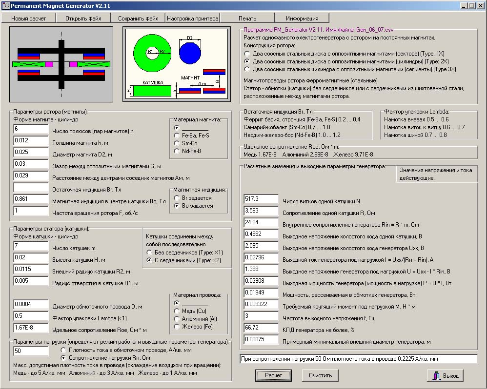
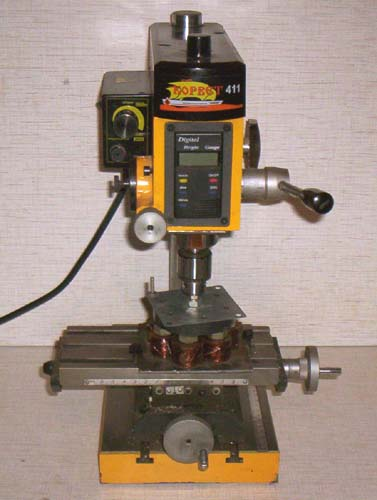
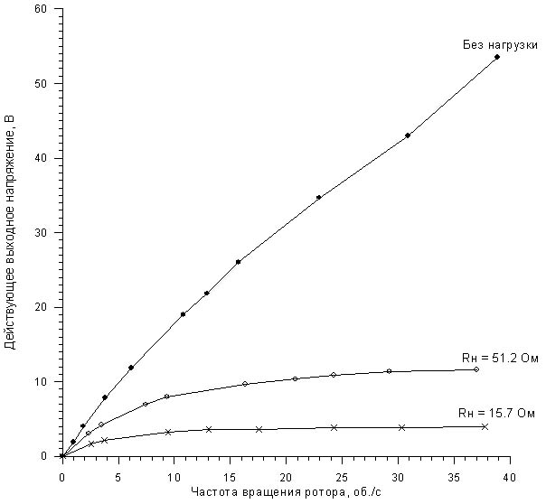
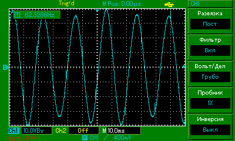
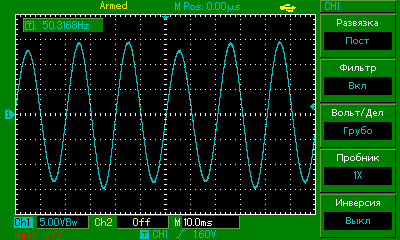
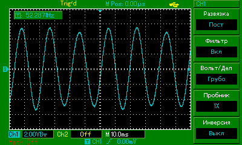

6-полюсный низкооборотный электрогенератор


Генератор сконструирован для проведения исследовательских работ по направлению "Альтернативные источники энергии: ветрогенераторы".
Характеристики электрогенератора:
Конструкция электрогенератора
Эскиз электрогенератора приведен на рис. 1.

Рис. 1. Эскиз 6-полюсного низкооборотного электрогенератора.
На квадратном стальном основании (статор) расположены по окружности катушки в форме цилиндрических соленоидов со стальными сердечниками (7 штук). В центре основания закреплен подшипник, в который вставлена ось. На оси крепится постоянный магнит - кольцо из феррита бария типоразмера К75 х 28 х 12. Кольцо намагничено аксиально, число полюсов - 6 (многополюсное намагничивание с переменной полярностью). Сверху к кольцу приклеена эпоксидной смолой стальная площадка квадратной формы. Она служит для уменьшения магнитного сопротивления, а также для крепления привода - ветродвигателя. Намагничивание магнита осуществлялось в установке намагничивания [14] с шестиполюсным намагничивающим устройством [15]. Расчет катушек генератора выполнен с помощью программы Coil [2]. Электрические характеристики генератора достаточно хорошо соответствуют расчетным [3, 10]. При испытаниях выяснилось, в частности, следующее. В режиме холостого хода выходное напряжение растет прямо пропорционально частоте вращения ротора генератора. В режиме короткого замыкания выходной ток с ростом частоты вращения достигает некоторого предельного значения (250 мА). В режиме работы на нагрузку выходной ток также достигает предельного значения (250 мА) с увеличением частоты вращения, то есть генератор переходит в режим источника тока.
Чертежи генератора: Gen_0612.rar (~26 Кбайт). Скопированный файл может быть проверен на отсутствие вирусов в режиме on-line [9].
Данная конструкция электрогенератора послужила основой для разработки других вариантов низкооборотных электрогенераторов [5, 6].
Расчеты электрогенератора
Расчет магнитной системы генератора произведен методом конечных элементов [11] с помощью программы Ansoft Maxwell [1]. На рис. 2 показана расчетная трехмерная модель магнитной системы электрогенератора.
Рис. 2. Трехмерная расчетная модель магнитной системы электрогенератора в программе Ansoft Maxwell [1]. Шаг сетки 1 мм. Стальные детали изображены серым цветом, полюса постоянного магнита - красным и синим. Обмотки не показаны.
Стальные детали электрогенератора изготовлены из малоуглеродистой стали, магнитные свойства которой представлены на рис. 3.

Рис. 3. Кривая намагничивания малоуглеродистой стали, использованной при изготовлении электрогенератора.
В электрогенераторе использован кольцевой 6-полюсный постоянный магнит типоразмера К75 х 28 х 12 (полюса в виде секторов обозначены синим и красным цветом на рис. 2) из феррита бария (Fe-B) со следующими магнитными свойствами [7]: остаточная индукция 0.35 Тл, коэрцитивная сила по намагниченности 150 кА/м. Постоянный магнит намагничен в установке намагничивания [14] с 6-полюсным намагничивающим индуктором [15]. Так как ток в обмотках генератора предполагается равным нулю (реакция якоря отсутствует), то в расчетной модели обмотки отсутствуют. На рис. 4 показана зависимость магнитной индукции на оси стального сердечника катушки от расстояния от основания электрогенератора. Среднее значение магнитной индукции в сердечнике 0.861 Тл.

Рис. 4. Магнитная индукция на оси сердечника катушки электрогенератора при максимальном потокосцеплении и нулевом токе в катушке. Магнитная индукция в воздушном зазоре между магнитом и полюсным наконечником катушки 0.22 Тл (усредненное расчетное значение) соответствует измеренной 0.205 Тл. Среднее расчетное значение магнитной индукции в сердечнике катушки 0.861 Тл.
Рассчитанное значение магнитной индукции в воздушном зазоре 0.22 Тл (рис. 4) не слишком сильно отличается от измеренного с помощью тесламетра [8] (0.205 Тл - усредненное измеренное значение по всем полюсам). Таким образом, можно сделать вывод, что расчетная модель достаточно хорошо соответствует реальной конструкции. Среднее расчетное значение магнитной индукции в сердечнике катушки на длине 20 мм B0 ≈ 0.861 Тл может быть подставлено в программу PM_Generator [3]. Результат расчета показан на рис. 5 и частично в таблице 1.

Рис. 5. Расчет параметров электрогенератора с помощью программы PM_Generator [3].
Таблица 1. Соответствие рассчитанных и измеренных параметров электрогенератора.
| Параметр | Рассчитанное значение | Измеренное значение |
| Число витков одной катушки | ≈517 | 500 |
| Внутреннее сопротивление Rin, Ом | 24.94 | 28 |
| Напряжение холостого хода Uxx, В (частота вращения ротора 1 об./с) | 2.095 | 1.91 |
Соответствие измеренных и рассчитанных значений достаточно хорошее с учетом того, что форма выходного напряжения генератора отличается от синусоидальной (рис. 6), а удельное сопротивление обмоточного провода, как правило, несколько больше справочного значения для меди (1.67 ∙ 10-8 Ом ∙ м [12]) из-за наличия примесей.

Рис. 6. Выходное напряжение холостого хода электрогенератора при частоте вращения ротора 1 оборот в секунду.
Испытания электрогенератора
Активное сопротивление генератора при последовательном включении обмоток измерено мультиметром APPA-107N и составило 28 + 0.05 Ом.
Индуктивность генератора при последовательном включении обмоток измерена LC-метром VC6243 и составила примерно 70 мГн (на частоте 1000 Гц).
Для снятия зависимости выходного напряжения генератора от частоты вращения ротора при разных нагрузках был собран стенд на основе малогабаритного вертикально-фрезерного станка Корвет-411 с регулируемой частотой вращения оборотов шпинделя (рис. 7).

Рис. 7. Стенд для снятия зависимости выходного напряжения электрогенератора от частоты вращения ротора при разных нагрузках.
Генератор крепится на столе станка. Стол станка перемещается в продольном и поперечном направлении, чтобы ось ротора генератора совпала с осью шпинделя станка. Далее ось ротора зажимается в патроне. К выводам генератора подключается осциллограф UTD2102CEL-R и резистивная нагрузка (при необходимости). Шпиндель станка приводится во вращение с заданной частотой. С помощью осциллографа определяется как частота вращения ротора генератора, так и его выходное напряжение. Зависимость действующего значения выходного напряжения генератора от частоты вращения ротора при разных нагрузках представлена на рис. 8.

Рис. 8. Зависимость действующего выходного напряжения генератора от частоты вращения ротора при разной нагрузке.
Выходное напряжение генератора без нагрузки растет примерно линейно с увеличением частоты вращения. При работе генератора на нагрузку выходное напряжение генератора при увеличении частоты вращения ротора достигает некоторого максимального значения, при котором действующее значение выходного тока через нагрузку равно примерно 0.25 А. Этот максимум зависит от сопротивления нагрузки (чем меньше сопротивление нагрузки, тем меньше максимально достижимое с ростом частоты вращения ротора выходное напряжение). Ниже на рис. 9 - 11 показано выходное напряжение электрогенератора при разных нагрузках и сходных частотах вращения ротора.

Рис. 9. Выходное напряжение электрогенератора без нагрузки при частоте вращения ротора 15.7 об./с (среднее амплитудное значение напряжения 36.8 В).

Рис. 10. Выходное напряжение электрогенератора под нагрузкой 51.2 Ом при частоте вращения ротора 16.3 об./с (среднее амплитудное значение напряжения 13.7 В).

Рис. 11. Выходное напряжение электрогенератора под нагрузкой 15.7 Ом при частоте вращения ротора 17.5 об./с (среднее амплитудное значение напряжения 5.1 В).
Ссылки:
08.12.2003
17.06.2004
09.09.2005
16.11.2005
27.06.2006
17.11.2007
04.07.2018
26.10.2018
Альтернативные источники энергии
Компьютеры и
Интернет
Магнитные поля
Механотронные системы
Перспективные
разработки
Электроника и
технология